Exploring Muhammad Ali’s Legacy Through a Data-Driven Timeline
Nicknamed "The Greatest", Muhammad Ali is regarded as one of the most significant and celebrated sports figures of the 20th century.
Apart from being known as the greatest heavyweight boxer of all times, other key events have also shaped the boxer's legacy.
Taking a closer look at the Smithsonian Collection, what are some of the symbols that depict Muhammad's Ali "greatness"?
 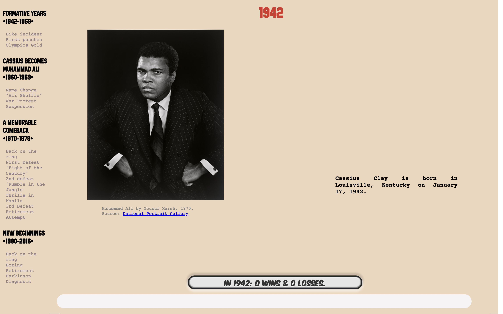
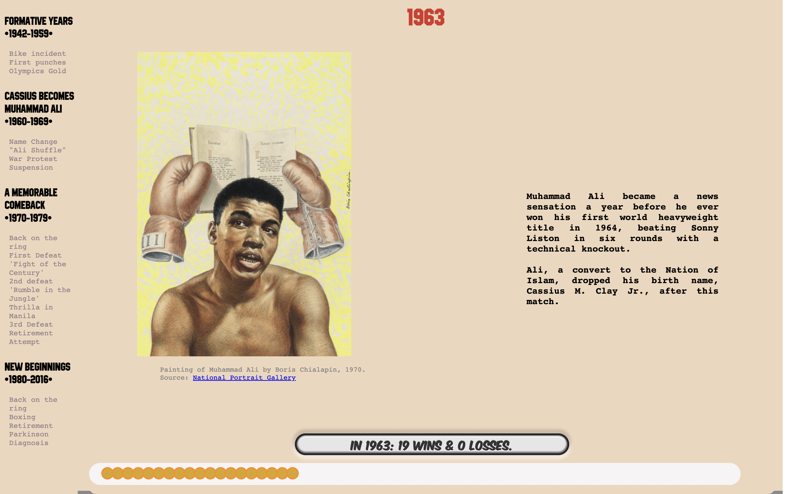
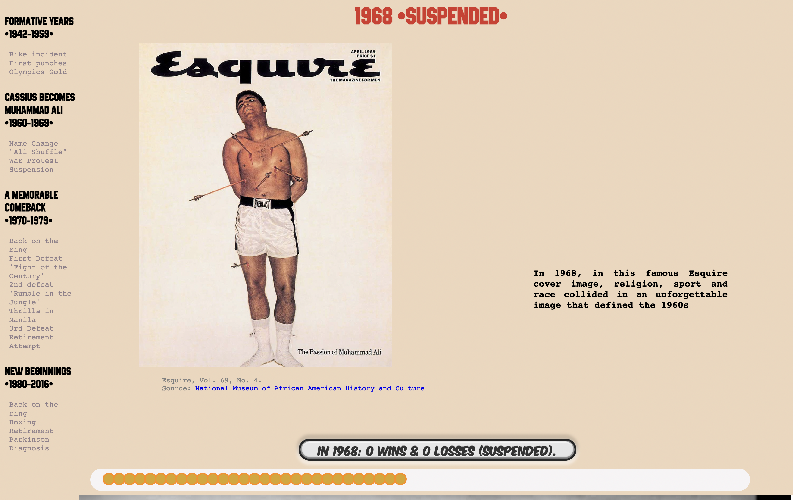
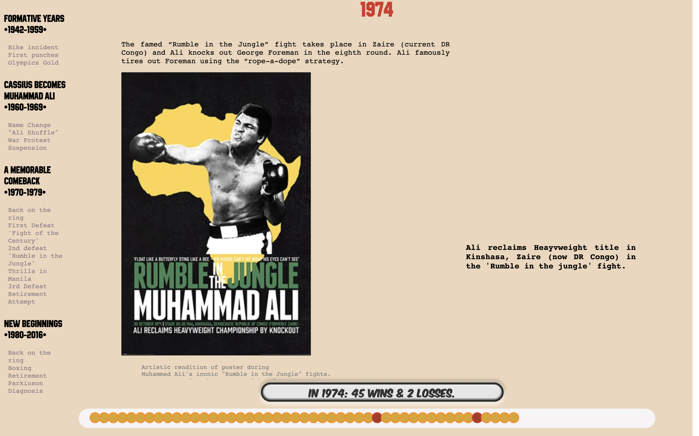
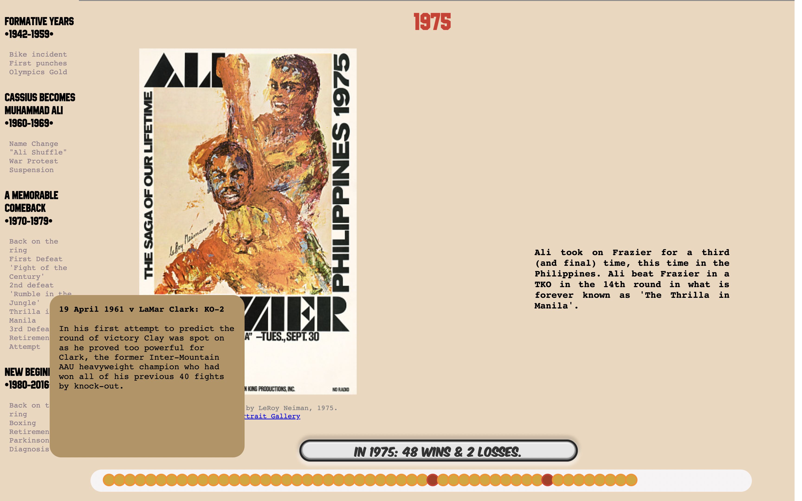
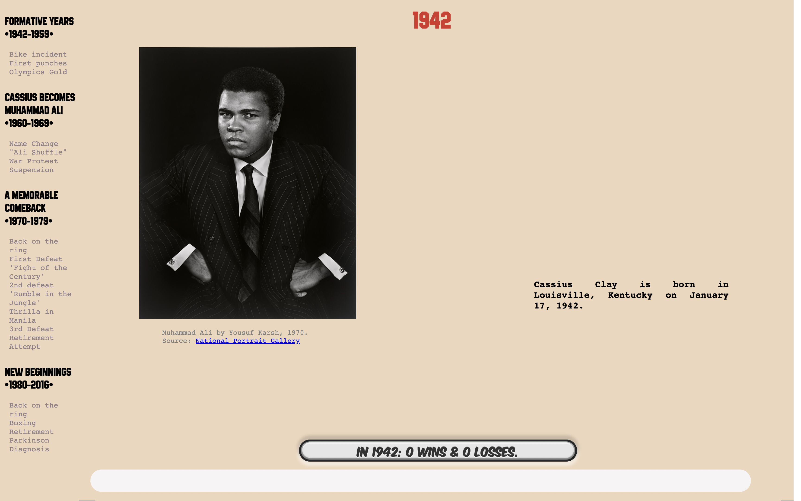
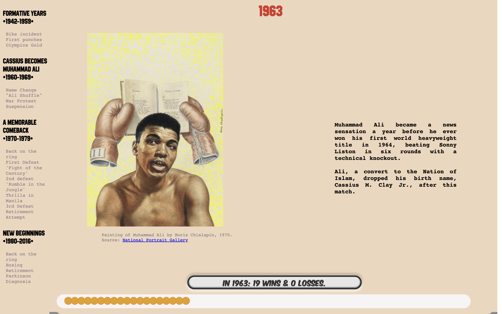
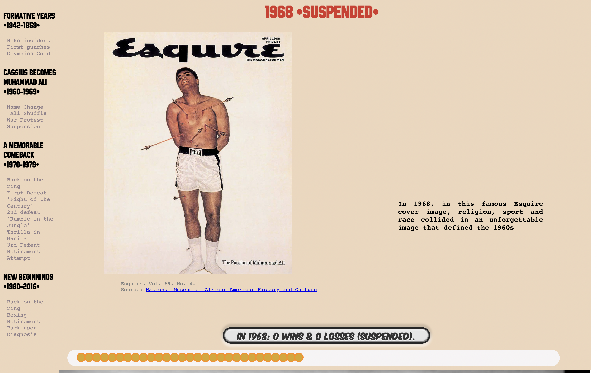
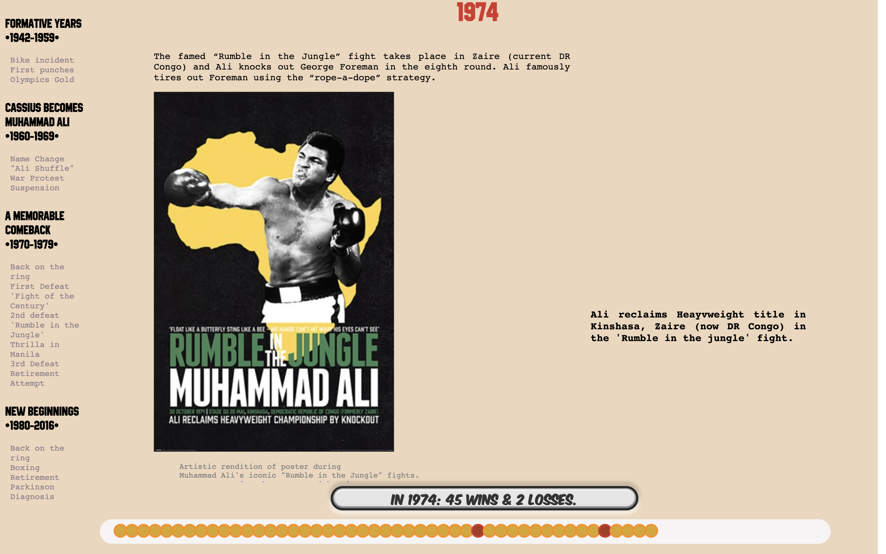
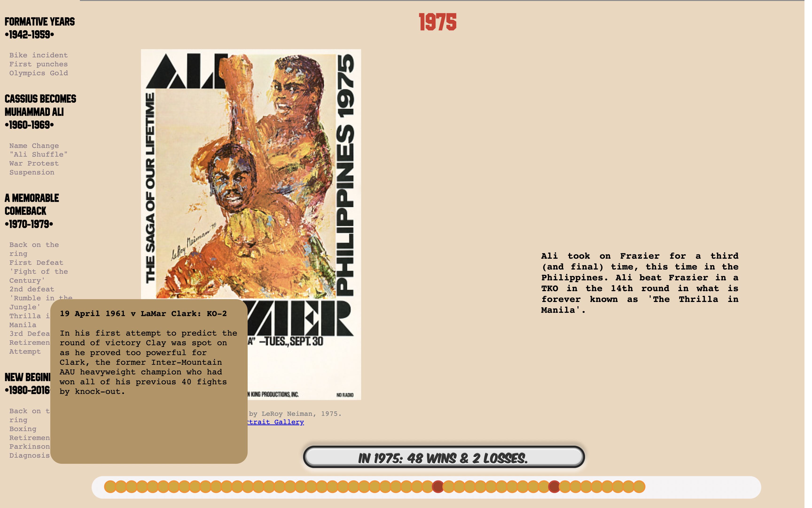
 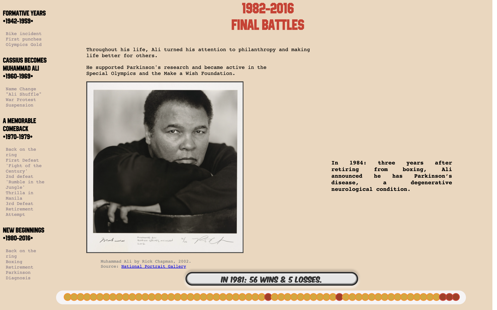
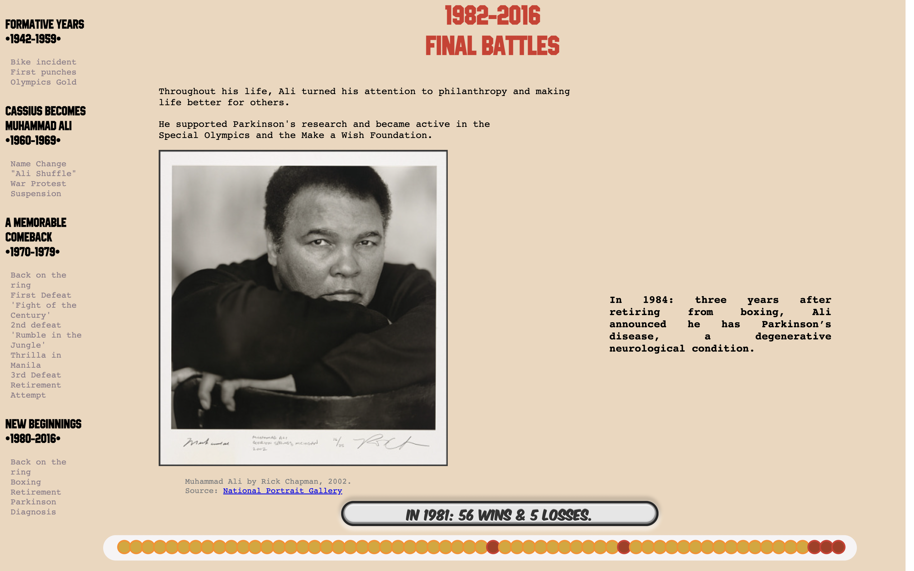
What makes Muhammad Ali so GREAT?
Dynamic Timeline & Storytelling
By crafting a visual narrative of Muhammad Ali's biography, this project weaves together different elements of his legacy to help the reader explore either horizontally or vertically the different chapters of the boxer's life.
In addition to narrative content, symbolic objects as well as iconic photos immortalizing defining events are juxtaposed to enrich this storytelling experience.
This project also blends his record-breaking boxing accomplishments with the significant social and political developments that shaped his era, without forgetting important artistic influences that were drawn from his achievements, as well as by his sense of social justice.
My creative process includes:
- Conceptualization, Iteration, & Prototyping through Figma
- HTML5, CSS3 & Javascript
- Scrollytelling Interactivity(Scrollama)
- D3.JS (to structure the data-driven timeline)
- Typography refinement via DaFont & Font Squirrel
NB. Most images were obtained through the Smithsonian Open Access API, historical content and sports data were curated and compiled through desktop research.